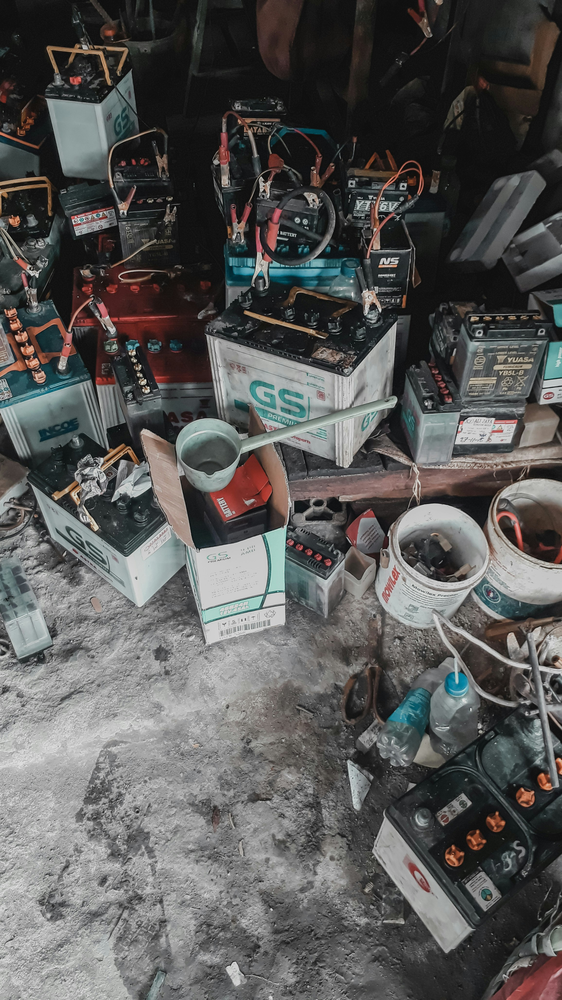
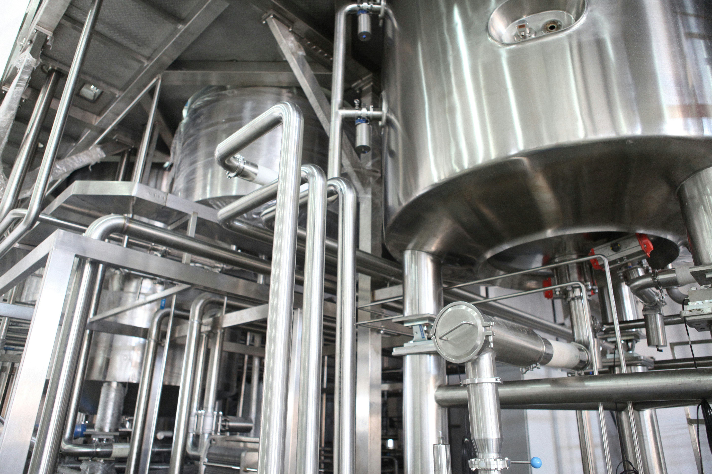
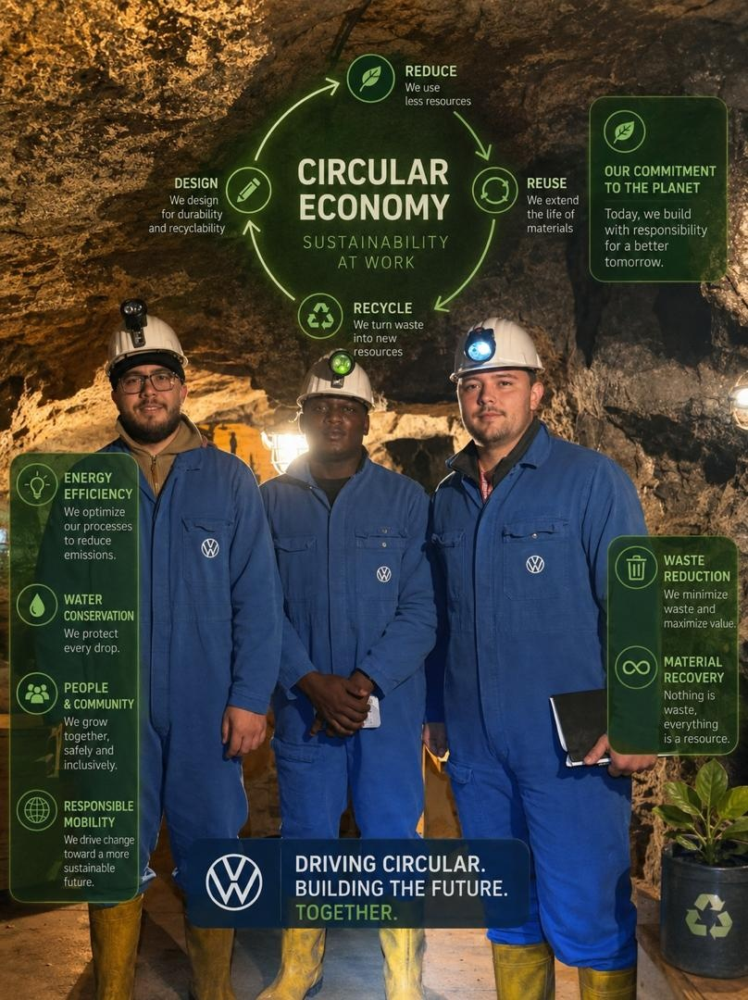

Critical Metal Recovery Technology
R-N-A Minerals Recovery Ltd helps recyclers, battery companies, and industrial partners recover lithium, cobalt, nickel, manganese, and copper from black mass using low-carbon bioleaching technology.
The Growing Crisis
Electric vehicles, consumer electronics, and grid-scale energy storage are generating massive volumes of lithium-ion battery waste. Black mass — the shredded active electrode material — is too often treated as a disposal problem. It isn't. It is a secondary ore containing the critical metals that power the clean energy transition.
Battery manufacturers, recyclers, and industrial operators now face converging pressures: tightening EU Battery Regulation recycling targets, rising raw material costs, investor ESG scrutiny, and a strategic need to secure domestic critical metal supply. The window to act is open — and growing.

Our Solution
Bioleaching uses carefully selected microorganisms — bacteria and fungi — to produce natural acids and oxidants that dissolve valuable metals from black mass into solution. Those metals are then recovered using proven hydrometallurgical methods: precipitation, solvent extraction, electrowinning, or ion exchange.
The result is a lower-temperature, lower-carbon, lower-chemical-input alternative to smelting — with recovery rates competitive with conventional methods and a substantially better ESG profile.
Shredded battery electrode material is conditioned and sized for optimal microbial contact.
Selected bacteria or fungi are cultivated to generate the specific acids and oxidants required.
Metals dissolve from the solid black mass into the liquid phase under controlled conditions.
Lithium, cobalt, nickel, manganese, and copper are recovered as marketable products.
Recommended Technology
After extensive evaluation of bioleaching configurations, R-N-A Minerals Recovery recommends the two-step stirred tank system as the optimal setup for black mass processing — protecting microorganisms from metal toxicity while delivering scalable, controllable performance.

Five Approaches
Not all bioleaching setups are equal. Understanding the tradeoffs helps you choose the right approach for your black mass feedstock and commercial objectives.
What We Recover
Black mass is not waste. It is a secondary ore containing critical materials for the next generation of batteries — and R-N-A Minerals Recovery exists to unlock that value.
The Technical Case
Technology selection determines your cost structure, environmental liability, and regulatory exposure. Bioleaching is not a compromise — it is a strategically superior choice for black mass processing.
| Criteria | Pyrometallurgy | Chemical Leaching | Bioleaching |
|---|---|---|---|
| Temperature | 1,200 – 1,600°C | 60 – 95°C | 28 – 35°C ✓ |
| Energy Use | Very High | Moderate | Low ✓ |
| CO₂ Emissions | High | Moderate | Low ✓ |
| Chemical Input | Flux agents | Strong acids / H₂O₂ | Mild / biological ✓ |
| Lithium Recovery | Poor – Moderate | Good | Good – Excellent ✓ |
| Cobalt Recovery | Good | Excellent | Excellent ✓ |
| Capital Cost | Very High | Moderate – High | Moderate ✓ |
| Regulatory Risk | High (emissions) | Medium (acids) | Low ✓ |
| Scalability | Limited flexibility | Moderate | Lab → Commercial ✓ |
| Mixed Cathode Feed | Difficult | Possible | Flexible ✓ |
Why Work With Us

Turn black mass from a disposal liability into a profitable source of critical battery metals.
Reduce reliance on high-temperature smelting and aggressive acid processing — cut your scope 3 exposure.
Support EU Battery Regulation recycled content targets and meet investor ESG reporting requirements.
Recover Li, Co, Ni, Mn, and Cu from secondary sources — reducing dependence on primary mining supply chains.
Start with a 50 g black mass sample and lab characterisation. Scale to pilot. Scale to commercial operation.
Demonstrate measurable innovation, sustainability, and responsible resource stewardship to customers and investors.
From Sample to Scale
A structured, de-risked pathway from your first sample submission to full commercial metal recovery.
XRF / ICP-OES analysis of metal content, particle size distribution, pH assessment, and feed material classification. Delivered as a written characterisation report.
Flask-scale experiments screening pH, temperature, pulp density, and organism selection for your specific black mass chemistry.
Select and adapt bacterial or fungal cultures to your feed material's specific elemental composition and toxicity profile.
Scale to 20 – 100 L pilot stirred tank reactor. Validate recovery rates, process stability, and operating parameters at pre-commercial scale.
Engineer the downstream recovery circuit for copper, cobalt, nickel, manganese, and lithium using precipitation, solvent extraction, or electrowinning.
Full engineering design, permitting support, equipment commissioning, and commercial ramp-up to continuous production.
Get In Touch
Whether you have black mass already stockpiled, are planning a new recycling facility, or are exploring the business case for bioleaching — our team is ready to discuss your project.